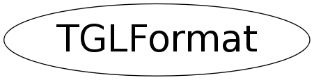

Function Members (Methods)
public:
| TGLFormat() | |
| TGLFormat(TGLFormat::EFormatOptions options) | |
| TGLFormat(const TGLFormat&) | |
| virtual | ~TGLFormat() |
| static TClass* | Class() |
| Int_t | GetAccumSize() const |
| Int_t | GetDepthSize() const |
| Int_t | GetSamples() const |
| Int_t | GetStencilSize() const |
| Bool_t | HasAccumBuffer() const |
| Bool_t | HasDepth() const |
| Bool_t | HasMultiSampling() const |
| Bool_t | HasStencil() const |
| virtual TClass* | IsA() const |
| Bool_t | IsDoubleBuffered() const |
| Bool_t | IsStereo() const |
| Bool_t | operator!=(const TGLFormat& rhs) const |
| TGLFormat& | operator=(const TGLFormat&) |
| Bool_t | operator==(const TGLFormat& rhs) const |
| void | SetAccumSize(Int_t accum) |
| void | SetDepthSize(Int_t depth) |
| void | SetDoubleBuffered(Bool_t db) |
| void | SetSamples(Int_t samples) |
| void | SetStencilSize(Int_t stencil) |
| void | SetStereo(Bool_t db) |
| virtual void | ShowMembers(TMemberInspector& insp) |
| virtual void | Streamer(TBuffer& b) |
| void | StreamerNVirtual(TBuffer& b) |
private:
| static Int_t | GetDefaultSamples() |
| static void | InitAvailableSamples() |
Class Charts
{kind=link}
{kind=link}
{kind=link}
{kind=link}

Function documentation
TGLFormat()
16-bits needed for some virtual machines (VirtualBox) and Xming-mesa (when running ssh from windows to linux). All others seem to have 24-bit depth-buffers only and use this anyway. Default ctor. Default surface is: -double buffered -RGBA -with depth buffer -no accumulation buffer -with stencil -multi-sampling depends on seeting of "OpenGL.Framebuffer.Multisample"
void InitAvailableSamples()